I am a Marie Skłodowska-Curie Actions (MSCA) Postdoctoral Fellow and Research Associate at Imperial College London, working with Prof. Stefanos Zafeiriou and Prof. Jiankang Deng, supported by the European Union's Horizon Europe programme. Before that, I obtained my Ph.D. from Tianjin University under the supervision of Prof. Jianye Hao, and my Master's and Bachelor's degrees from Huazhong University of Science and Technology, supervised by Prof. Kun He.
My research lies at the intersection of Embodied Intelligence, Multimodal Large Models, and Reinforcement Learning. I am especially interested in vision-language-action models, long-horizon robotic manipulation, generalist embodied agents, diffusion-based decision making, and benchmarks & evaluation for embodied AI — with the broader goal of bridging large language models with robotic control to develop generalizable approaches for embodied intelligence in the real world.
I am always happy to discuss research and explore potential collaborations — feel free to reach out via email.
* denotes equal contribution.
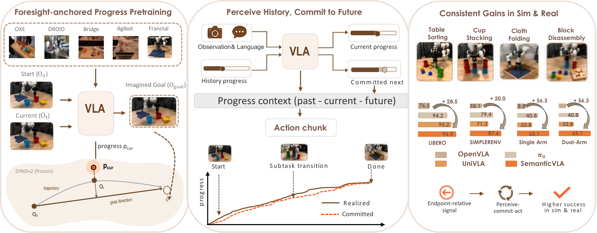
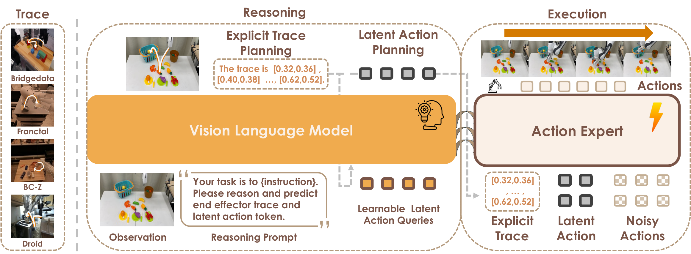
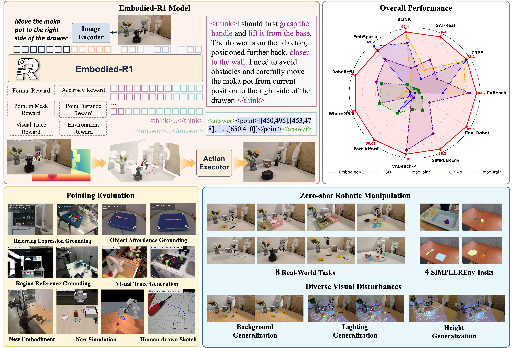
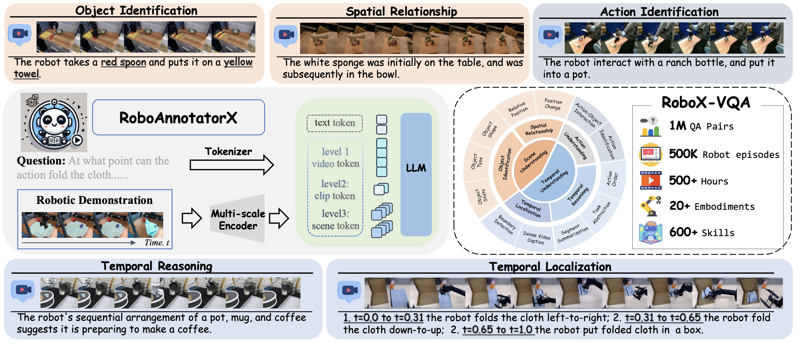
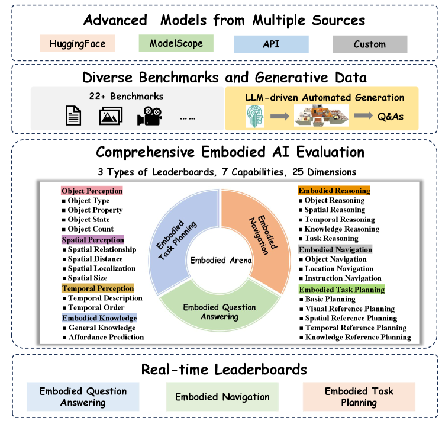
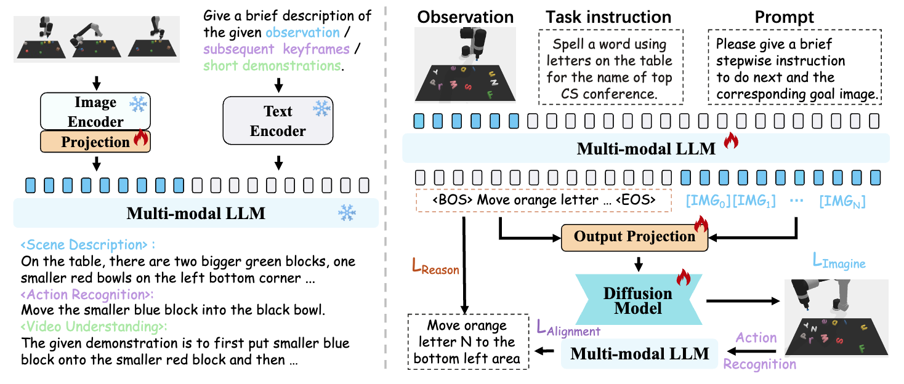
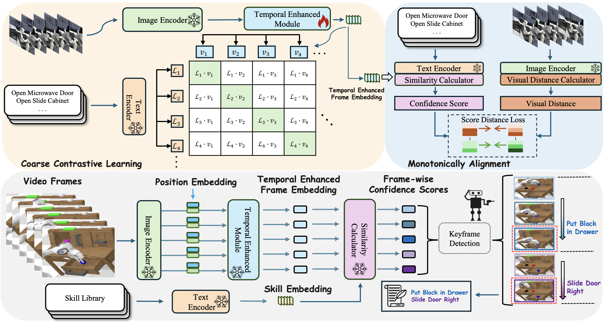
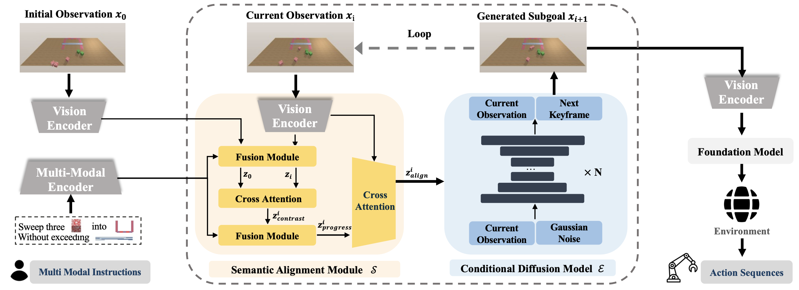
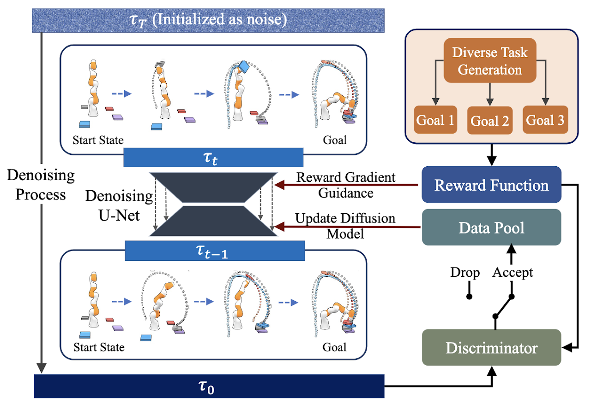
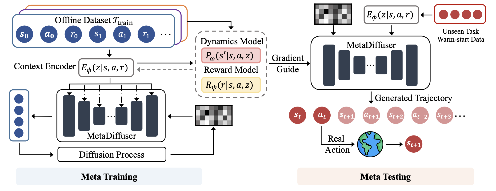
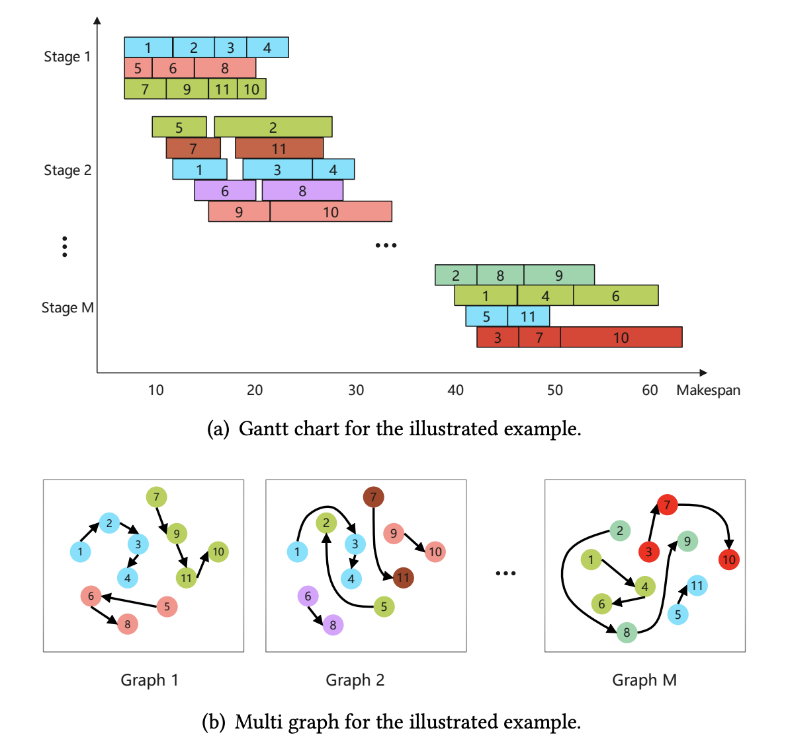
Area Chair: ICLR 2027.
Conference Reviewer: CVPR, ICCV, ECCV, NeurIPS, ICML, ICLR, ICRA, AAAI, WWW, AISTATS, AAMAS.
Journal Reviewer: TPAMI, IEEE T-RO, TMLR, Pattern Recognition, IEEE TNNLS, KBS, IEEE TCYB, JAAMAS.